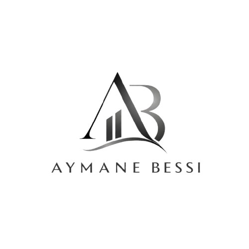

Chercheur Doctoral • Formateur & Coach
Séances One-to-One adaptées à vos objectifs et votre rythme. Présentiel ou en ligne, sans engagement ni formulaire.
Rigueur scientifique, pédagogie sur-mesure et accompagnement bienveillant
Étudiant-chercheur doctoral en Biologie végétale, Environnement et Agriculture Durable, poursuivant ma formation doctorale en Sciences et Génie de la Matière, de la Terre et de la Vie.
🏆 3ᵉ place au concours MT180 – reconnaissance officielle de mes compétences en communication scientifique et prise de parole publique.
Je tutorise tous les niveaux avec une approche 100% personnalisée, centrée sur vos besoins, votre rythme et votre progression concrète.
En parallèle de mon doctorat, je me forme continuellement en pédagogie, leadership et développement professionnel pour vous offrir un accompagnement polyvalent et actuel.
🔹 One-to-One uniquement • Présentiel ou à distance • 🔹 Résultats concrets
Un accompagnement ciblé pour renforcer vos compétences et votre confiance
Expression orale/écrite, grammaire, préparation aux examens, communication professionnelle.
Structurer vos idées, gérer le stress, captiver votre auditoire — en français ou en anglais.
Fixer des objectifs, renforcer votre mindset, développer votre influence et votre impact.
Créer des supports percutants, présenter des données complexes avec clarté et conviction.
Orientation, rédaction de CV/lettres, préparation aux entretiens, stratégie de carrière.
Simple, rapide, sans engagement. Choisissez votre canal préféré 👇
Prêt·e à avancer vers vos objectifs ?
Écrivez-moi directement — je réponds sous 24h.
SÉANCES ONE-TO-ONE • PRÉSENTIEL OU EN LIGNE